ANCHORFIX ti mostra il fondale prima di calare l’ancora e ti sveglia se la barca ara.
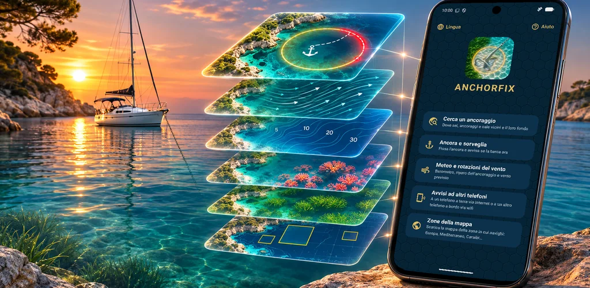
Praterie di posidonia e altre fanerogame, corallo e secche coralline. Zone di sabbia lontane dalle praterie con la profondità indicativa, e avviso se l’ancora o il cerchio di borneggio toccano una prateria protetta.
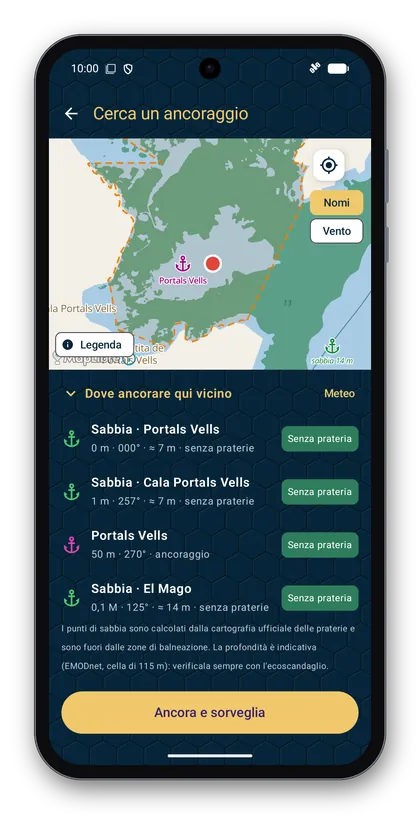
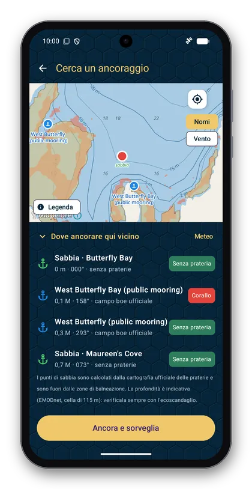
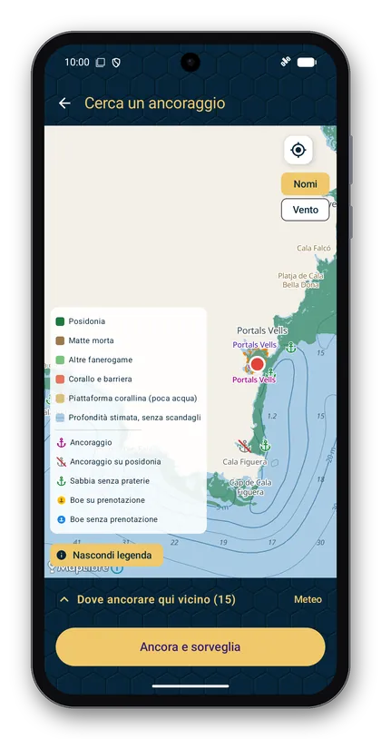
Boe in giallo se va prenotata e in blu se no, con gestore, telefono, canale VHF e link di prenotazione. E le zone dove è vietato ancorare. Se manca qualcosa o è cambiato, segnalacelo direttamente dalla mappa.
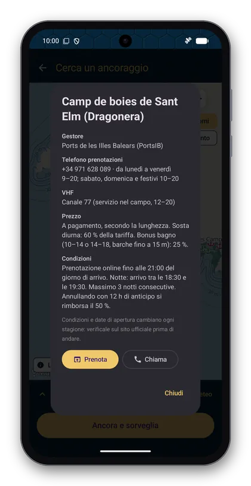
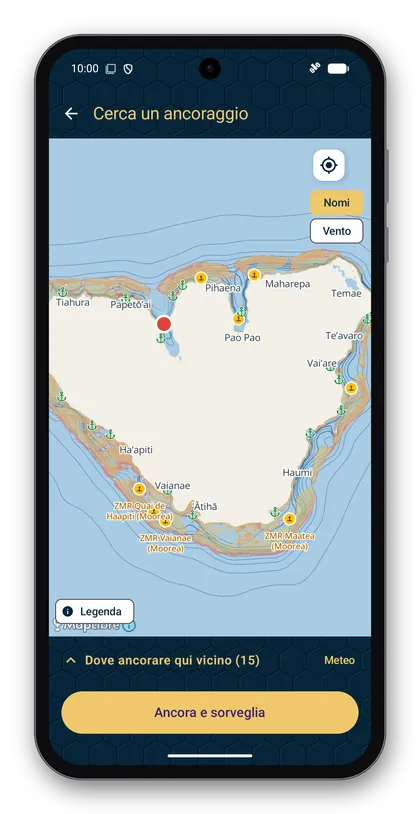
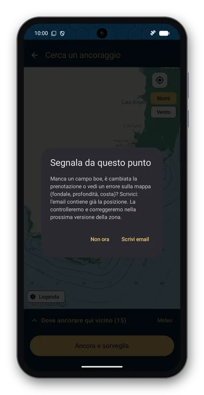
Isobate e scandagli, con avviso dove la profondità è solo stimata. Il calcolatore di ancoraggio ti dice quanta catena filare in base allo scandaglio, alla tua barca e al vento previsto, e dove sarà il cerchio di borneggio.
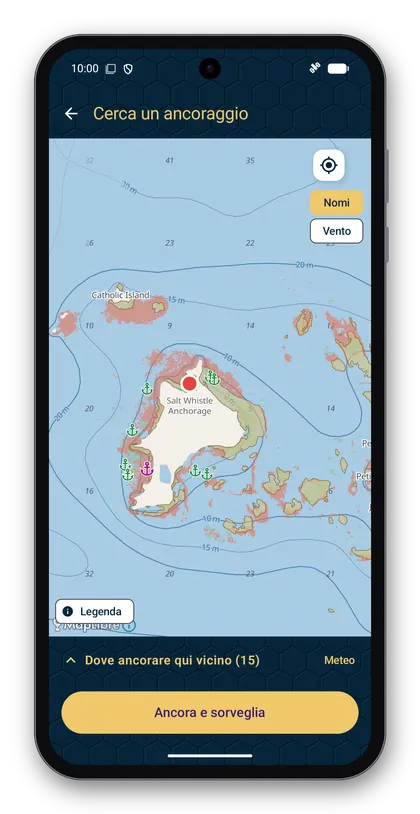
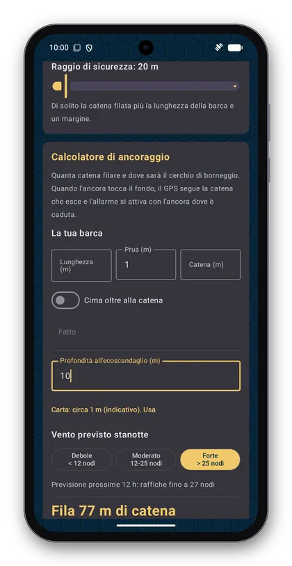
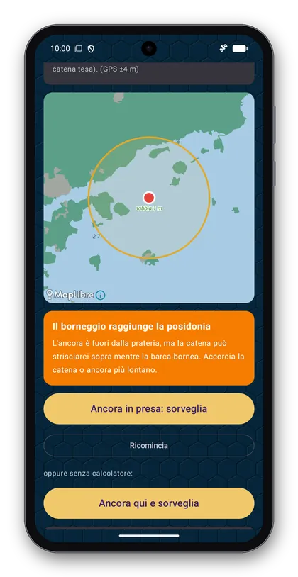
Vento previsto sulla mappa con particelle animate e previsione oraria a 72 h. Ridosso dell’ancoraggio per ogni direzione del vento, barometro con tendenza e avvisi durante la sorveglianza se è previsto vento pericoloso o la pressione scende in fretta.
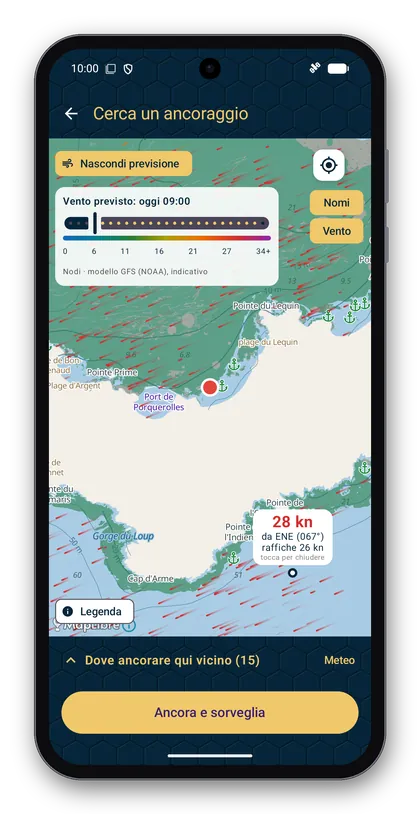
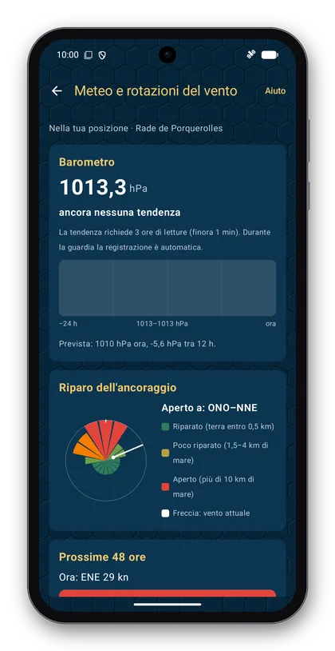
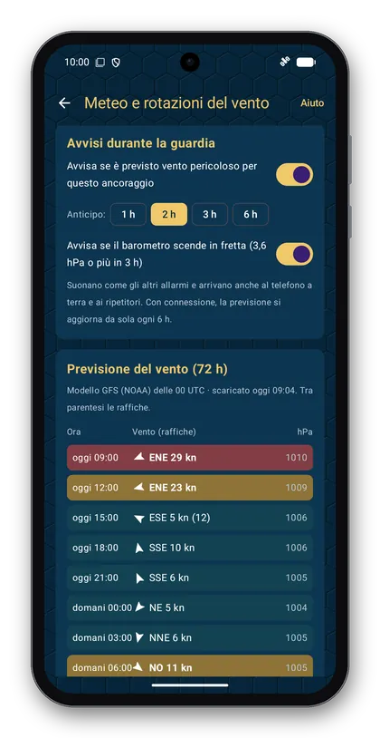
Cerchio di borneggio, traccia della barca e distanza dall’ancora. Allarme di aratura che suona anche col telefono in silenzioso, con rilevamento precoce prima di uscire dal cerchio, e allarmi di perdita GPS e batteria scarica.
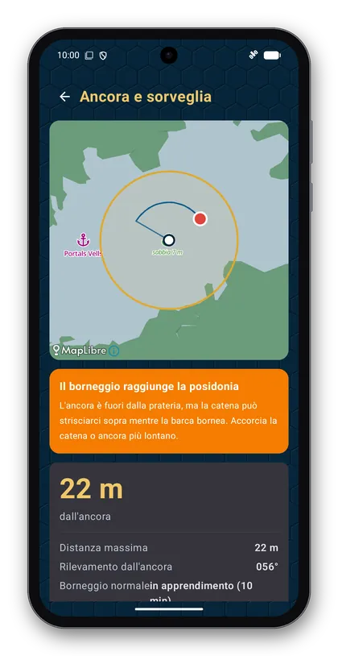
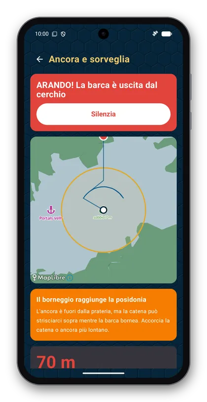
Gli allarmi arrivano al telefono di chi è a terra con l’app gratuita ntfy, senza registrazione. Un altro telefono o tablet a bordo può seguire l’ancoraggio via wifi, senza internet.
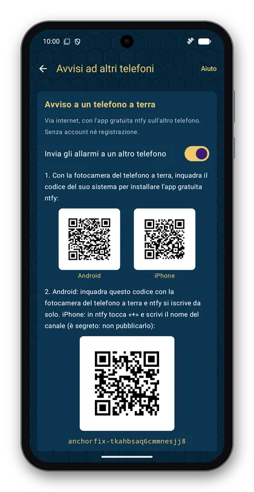
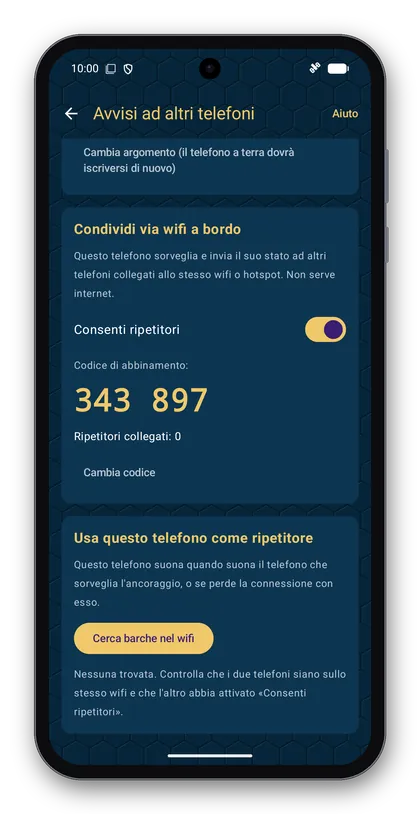
Scegli sulla mappa del mondo la zona della prossima destinazione, scaricala prima di partire e usala senza internet.
Zone di mappa in tutto il mondo. Mediterraneo, Atlantico, Caraibi, Pacifico, Oceano Indiano e Sud America. Una volta scaricate, funzionano senza internet.
In italiano, inglese, spagnolo, tedesco, francese e portoghese.
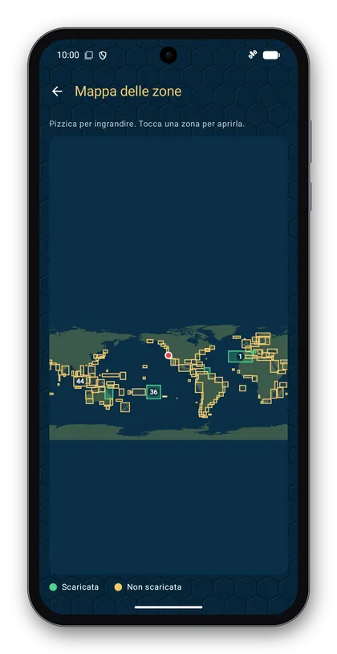
Una guida completa offline: come ancorare bene, come leggere la mappa del fondale, i campi boe, gli allarmi, il meteo e le rotazioni del vento, e come evitare che il sistema chiuda la sorveglianza.
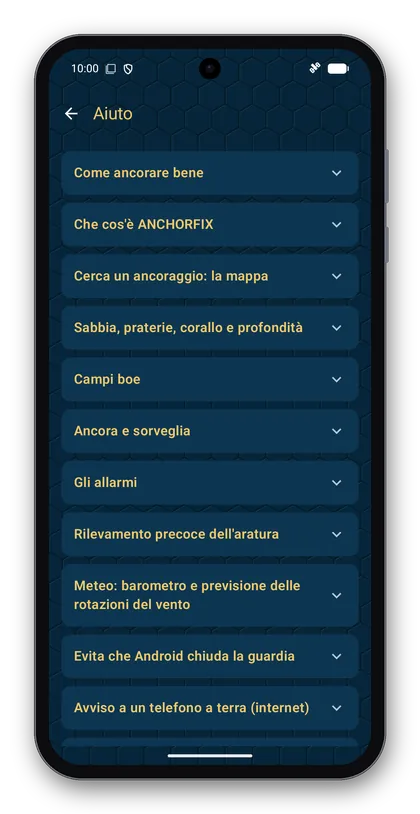
Niente account, niente pubblicità, niente analisi. La tua posizione resta sul telefono.
Avviso: la cartografia e le previsioni sono indicative. Non sostituiscono le carte nautiche ufficiali, l’ecoscandaglio né la guardia a bordo.
© contributori di OpenStreetMap · Allen Coral Atlas · EMODnet · GEBCO · NOAA (GFS) · cartografia ufficiale delle praterie di ogni paese.